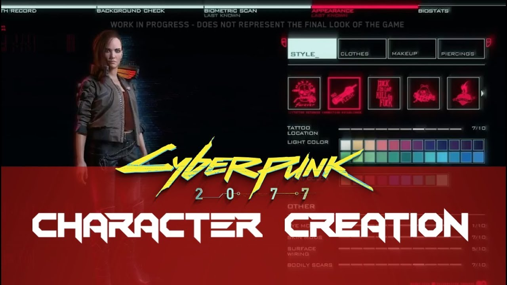

Since Cyberpunk 2077 is set in a time period where humans have transcended being human, and body modification is common,
CD Projekt Red decided to not confine character creation to two gender options.

While this is a game set in the future, and the intent wasn’t
necessarily to be inclusive, having non-binary characters is a large step towards inclusivity in gaming.
However, in the current political state, while great progress is being made towards acceptance of people
who do not fit in the current gender norms, there is still a lot of resistance to change and complete
acceptance of non-binary genders. This change was made to lower the time spent on the story and dialogue in the game and
to have the characters created by the players fit better into the futuristic setting of the game,
however some players are angry because they want to have a character that matches their exact gender
identity, and the lack of a binary option offends them. This is a very progressive viewpoint overall,
and hopefully something that will stay in the industry, regardless of genre.